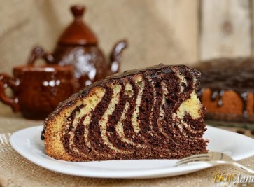
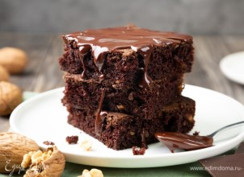
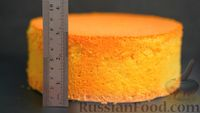
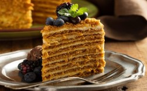

торты/пироги
булочки
печенье
пончики
Пирог "Зебра"
Рецепты выпечки на скорую руку меня всегда выручают. «Зебра» - это мой номер один, самый-самый любимый. :)
Любимец нашей семьи и всех наших знакомых. Простой и очень домашний, ведь это выпечка из сметаны.

 вот рецепт
вот рецепт
Чизке́йк ( «сырный пирог», «творожный пирог») — блюдо европейской и американской кухни, представляющее собой сыросодержащий десерт от творожной запеканки до суфле. Хотя данное блюдо и называют тортом или пирогом (которые в своём составе обычно имеют бисквит), чизкейк не бисквитный десерт: его основанием чаще всего являются толчёное песочное печенье. Основная часть чизкейка, начинка — Для чизкейка чаще всего используют сливочный сыр Филадельфия, но также могут использоваться другие виды: мягкий творог, рикотта, маскарпоне (ит.), нёшатель (фр.) или сырный кварк (нем.). Родиной чизкейка считается Древняя Греция, а интернациональную популярность пирог получил в США.
Брауни (шоколадный пирог) Брауни - вкусный, ароматный и нежный шоколадный пирог.
 вот рецепт
Классический бисквит
 вот рецепт
Медовик (без раскатки коржей) Вкусный, нежный, мягкий торт "Медовик" с ароматными коржами и сметанным кремом. Простой и очень быстрый рецепт медового торта без раскатки коржей, приготовление которого займёт у вас всего полчаса.
 вот рецепт
ягоды, шоколад, печенье, глазурь, взбитые сливки, безе, мастика, кондитерские бусины и т.д.